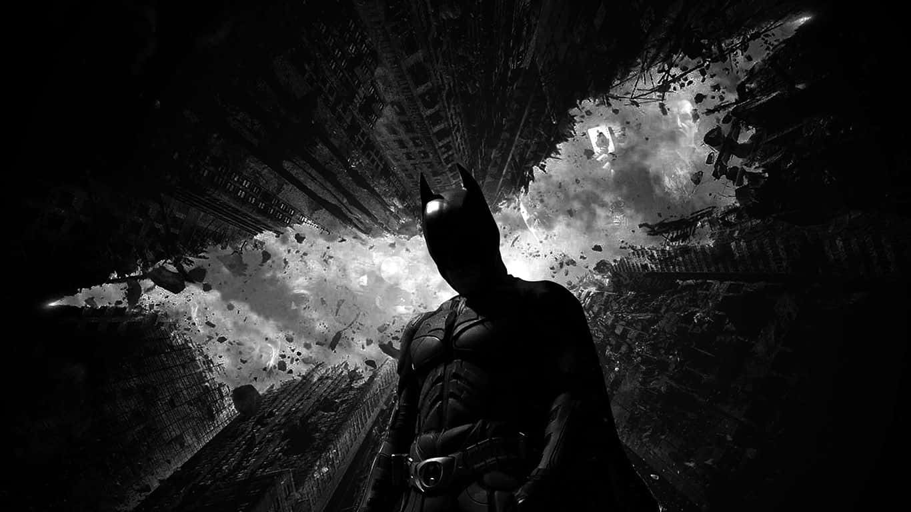
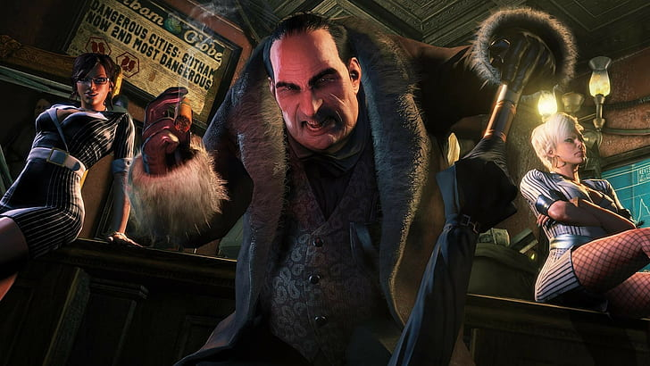
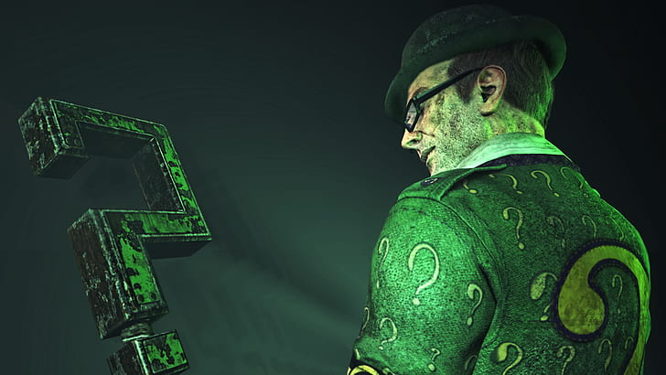
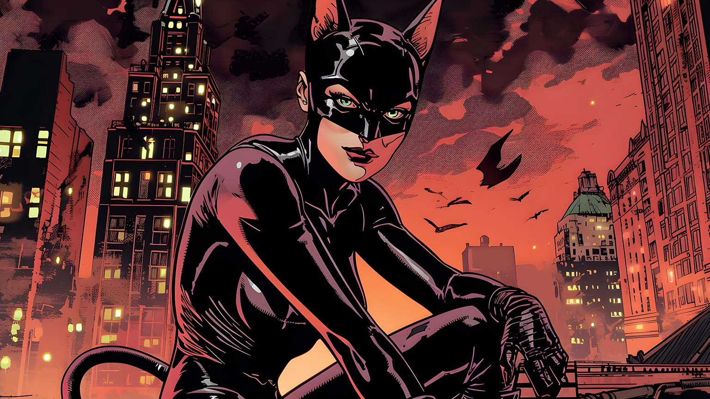

BATMAN

Batman is the super-hero protector of Gotham City, a man dressed like a bat who fights against evil and strikes terror into the hearts of criminals everywhere. In his secret identity, he assumes the alias of Bruce Wayne, billionaire industrialist and notorious playboy; though "Bruce Wayne" is technically his real name, this Bruce Wayne is a disguise--that of the man he would have been had his parents not been murdered before his eyes when he was no more than a mere boy.Although Batman possesses no super-human powers, he is one of the world's smartest men and greatest fighters. His physical prowess and technical ingenuity make him an incredibly dangerous opponent. He is also a founding member of the Justice League and the Outsiders. Dick Grayson, the first "crime orphan" to assume the identity of Robin and be nicknamed "The Boy Wonder," who currently uses the alias of Nightwing, is Wayne's hand-picked successor.
JAMES GORDAN

Commissioner James "Jim" Gordon was a detective in the Gotham City Police Department. After fighting numerous freaks and madmen, occasionally working alongside criminals like the Riddler and his nemesis, the Penguin to combat greater threats such as the Valeska twins and the Court of Owls, and leading Gotham City as best he could through crisis after crisis, he eventually became the police commissioner.Jim Gordon resided in the suburban area of Gotham during his childhood, the son of a successful, although corrupt, district attorney. After his father was killed in a car crash by a drunk driver, he joined the army and became a war hero while serving alongside Eduardo Dorrance. After returning to the city in which he had grown up in and becoming engaged to Barbara Kean, Jim joined the Gotham City Police Department as a rookie detective, and partner of the corrupt Harvey Bullock.
PENGUIN

The Penguin (real name Oswald Cobblepot) is a greedy, emotional, and sadistic Gotham City underworld figure who slowly worked his way to the top of the city's crime organizations. He is the longtime nemesis of Jim Gordon, the on-and-off friend of the Riddler, and an enemy of the Dark Knight. At the time of the murder of Thomas and Martha Wayne, Oswald Cobblepot was a young man working as an umbrella boy for nightclub owner and crime boss Fish Mooney. He is also completely devoted to his mother and has aspirations of making a name for himself in the city. However, under the surface, he is cold and calculating, notifying the MCU that Fish Mooney has in her possession the pearl necklace belonging to Martha Wayne, who was murdered alongside her husband Thomas by a mugger while on a night out with their son Bruce. When Fish discovers his betrayal, she breaks his leg, leaving him with a limp. Detectives Harvey Bullock and Jim Gordon later bring him to the docks but the latter ultimately spares his life. When Oswald swims to safety he kills a fisherman in a bid to protect the fact that he is still alive.
RIDDLER

The Riddler (real name Ed Nygma) is cold, narcissistic, puzzle-leaving serial killer driven insane by his split persona. Once a forensic examiner working at the GCPD Headquarters, he believes in truly showing Gotham City just how intelligent and powerful he is through murder and mayhem. He is the on-and-off friend of the Penguin, and a frequent enemy of Jim Gordon and the Dark Knight. Ed Nygma worked as a forensic examiner in the Gotham City Police Department, an awkward and excitable genius obsessed with riddles and puzzles with an uneven relationship with detectives Jim Gordon and Harvey Bullock. He helped them on several cases during Gordon's first year as a detective, helping them stop the four-way gangwar between Carmine Falcone, Fish Mooney, Sal Maroni, and the Penguin.
CAT WOMAN

Catwoman is Selina Kyle, a morally ambiguous character who has been an antihero, acting as an adversary, a crimefighter and also a love interest for the Batman. Years of training have made her stealthy and agile as a world-class criminal, and her mastery of martial arts makes her a formidable physical opponent. Although she began her career as a burglar, she has since then reformed and begun protecting Gotham City in her own style. This has led to her being almost completely accepted as a regular member of the Batman Family. She has also been a member of the Birds of Prey, the Outsiders, the Gotham City Sirens, the Injustice League, the Justice League and the Secret Society of Super-Villains. Her close friend Holly Robinson acted as her successor for an extended period when Selina was out of commission. In Prime Earth continuity, Eiko Hasigawa assumed the Catwoman mantle during a time in which Selina was serving as a crime boss.